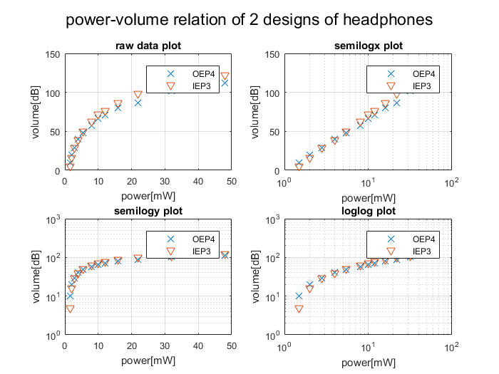
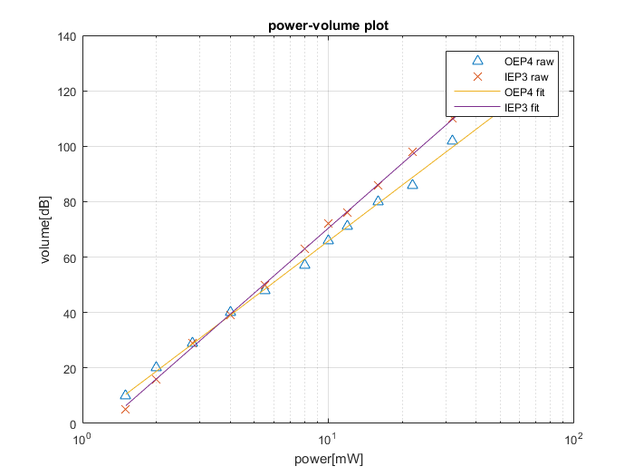
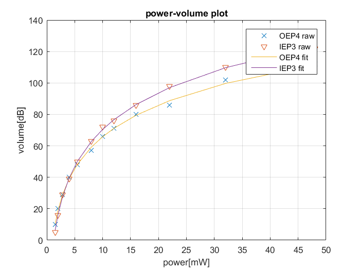

Contents
%%%%%%%%%%%%%%%%%%%%%%%%%%%%%%%%%%%%%%%%%%%%%%%%%%%%%%%%%%%%%%%%%%%%% % ENGR 132 % Program Description % determine the relationship between power and volume for each design % % Assigment Information % Assignment: PS 05, Problem 2 % Author: Yuefan Fu, fu194@purdue.edu % Team ID: 001-05 % Contributor: Name, login@purdue [repeat for each] %%%%%%%%%%%%%%%%%%%%%%%%%%%%%%%%%%%%%%%%%%%%%%%%%%%%%%%%%%%%%%%%%%%%%
__________________
INITIALIZATION
%import all information from the csv file allData= importdata('Data_volume_power.csv'); %assign variables %power input in[mW] power=allData.data(:,1); %volume output by OEP4 volOEP4=allData.data(:,2); %volume output by IEP3 volIEP3=allData.data(:,3);
__________________
SUBPLOT FIGURE
%plot raw data subplot(2,2,1); plot(power,volOEP4,'x'); hold on; plot(power,volIEP3,'v'); grid on; xlabel('power[mW]'); ylabel('volume[dB]'); title('raw data plot'); legend('OEP4','IEP3'); set(gca,'FontSize',8); %plot semelogx subplot(2,2,2); semilogx(power,volOEP4,'x'); hold on; semilogx(power,volIEP3,'v'); grid on; xlabel('power[mW]'); ylabel('volume[dB]'); title('semilogx plot'); legend('OEP4','IEP3'); set(gca,'FontSize',8); %plot semilogy subplot(2,2,3); semilogy(power,volOEP4,'x'); hold on; semilogy(power,volIEP3,'v'); grid on; xlabel('power[mW]'); ylabel('volume[dB]'); title('semilogy plot'); legend('OEP4','IEP3'); set(gca,'FontSize',8); %plot loglog subplot(2,2,4); loglog(power,volOEP4,'x'); hold on; loglog(power,volIEP3,'v'); grid on; xlabel('power[mW]'); ylabel('volume[dB]'); title('loglog plot'); legend('OEP4','IEP3'); set(gca,'FontSize',8); suptitle('power-volume relation of 2 designs of headphones');
__________________
LINEARIZATION
%using semelogx plot, which is most close to line. %calculate regression lines' coeffieient logxCoefOEP4=polyfit(log10(power),volOEP4,1); logxCoefIEP3=polyfit(log10(power),volIEP3,1); %print linearized equation fprintf('The LINEARIZED function of power-volume of OEP4 is: Y = X*%.2f %.2f\n',logxCoefOEP4); fprintf('The LINEARIZED function of power-volume of IEP3 is: Y = X*%.2f %.2f\n',logxCoefIEP3); %plot data and regression lines in a l scale figure; semilogx(power,volOEP4,'^'); hold on; semilogx(power,volIEP3,'x'); semilogx(power,log10(power)*logxCoefOEP4(1)+logxCoefOEP4(2)); semilogx(power,log10(power)*logxCoefIEP3(1)+logxCoefIEP3(2)); hold off; legend('OEP4 raw','IEP3 raw','OEP4 fit','IEP3 fit'); grid on; xlabel('power[mW]'); ylabel('volume[dB]'); title('power-volume plot'); set(gca,'FontSize',8);
The LINEARIZED function of power-volume of OEP4 is: Y = X*67.13 -1.35 The LINEARIZED function of power-volume of IEP3 is: Y = X*77.75 -7.32
__________________
HEADPHONE DESIGN MODELS
%print general function in form volume=f(power) fprintf('The function of power-volume of OEP4 is: volume = log10(power)*%.2f %.2f\n',logxCoefOEP4); fprintf('The function of power-volume of IEP3 is: volume = log10(power)*%.2f %.2f\n',logxCoefIEP3); %plot the original data with the best-fit curve for each of the headphone designs. figure; plot(power,volOEP4,'x'); hold on; plot(power,volIEP3,'v'); plot(power,log10(power)*logxCoefOEP4(1)+logxCoefOEP4(2)); semilogx(power,log10(power)*logxCoefIEP3(1)+logxCoefIEP3(2)); legend('OEP4 raw','IEP3 raw','OEP4 fit','IEP3 fit'); grid on; xlabel('power[mW]'); ylabel('volume[dB]'); title('power-volume plot');
The function of power-volume of OEP4 is: volume = log10(power)*67.13 -1.35 The function of power-volume of IEP3 is: volume = log10(power)*77.75 -7.32
__________________
PREDICTION CALCULATIONS
predPower=[25,40,50]; predOEP4=log10(predPower)*logxCoefOEP4(1)+logxCoefOEP4(2); predIEP3=log10(predPower)*logxCoefIEP3(1)+logxCoefIEP3(2);
__________________
ANALYSIS
-- Q1
semelogx plot best shows the relation between the power input and the volume because semilogx plot is most close to lines.
-- Q2
OEP4 25mW: 92.4914 dB 40mW: 106.1935 dB 50mW: out of the range of the model IEP3 25mW: 101.368 dB 40mW: 117.2377 dB 50mW: out of the range of the model
-- Q3
The IEP3 is more sensitive because due to same power incerase, the volime increase of IEP3 is more than OEP4.
__________________
ACADEMIC INTEGRITY STATEMENT
I/We have not used source code obtained from any other unauthorized source, either modified or unmodified. Neither have I/we provided access to my/our code to another. The project I/we am/are submitting is my/our own original work.